2010-04-02 19:28:33 다짜고짜 간장 사진 2 아이폰을 사고 나니 디카를 덜 쓰게 된다.아주 어둡지만 않다면 간장도 나름 예쁘게 찍을 수 있다.아래는 아이폰 기본 카메라로 찍은 사진.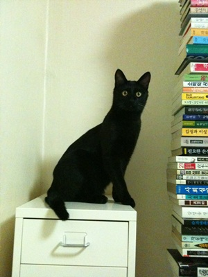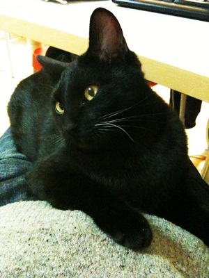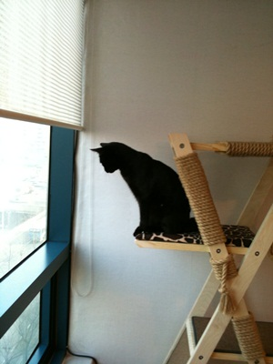여기부턴 Hipstamatic이라는 $1.99짜리 어플로 찍은 사진.(기본으로 제공되는 John's Lens로 촬영)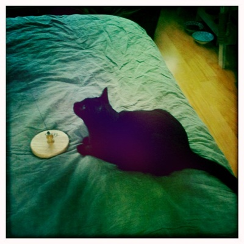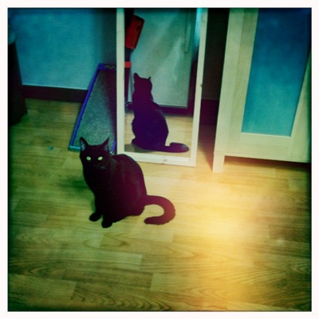무슨 마법사가 키우는 고양이 같구나.마법은 필요없으니 네코무라씨처럼 집안일이나 도우면 좋으련만.
 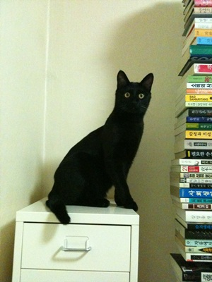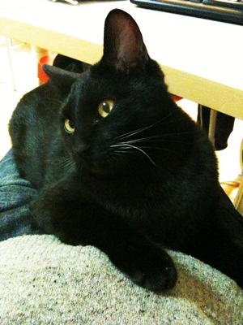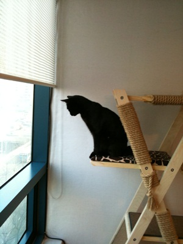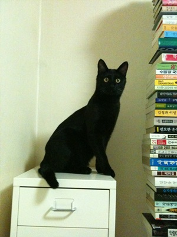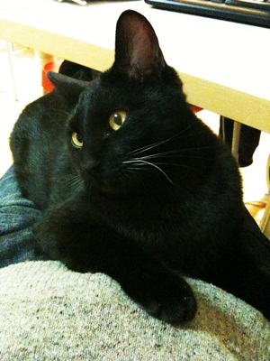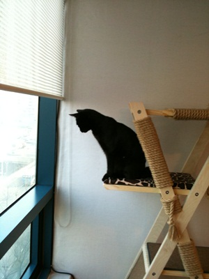
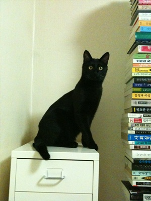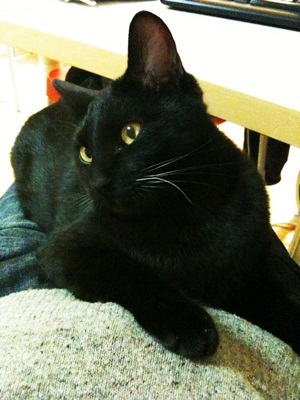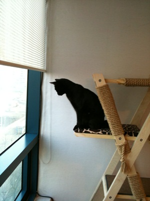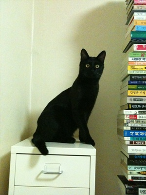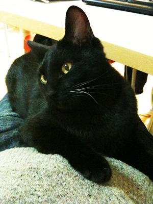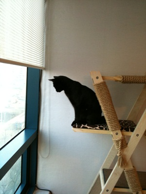